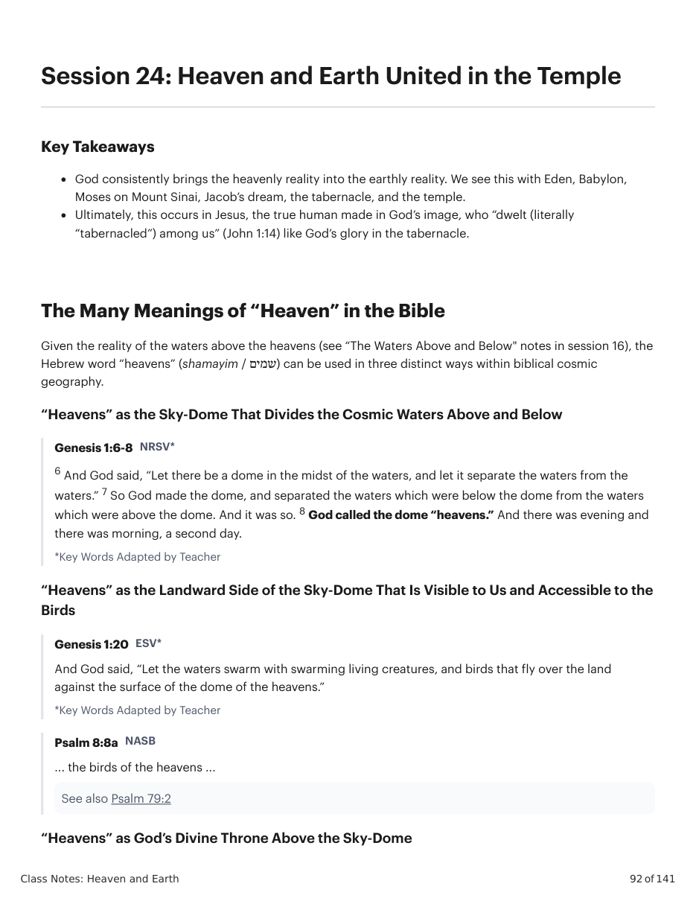
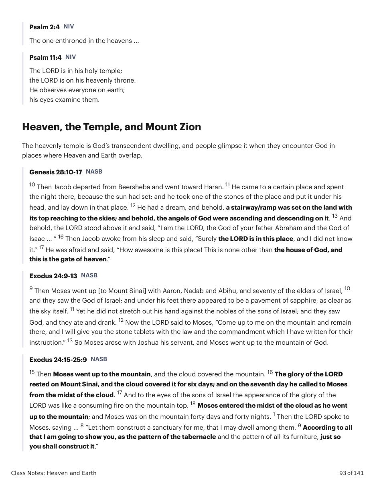
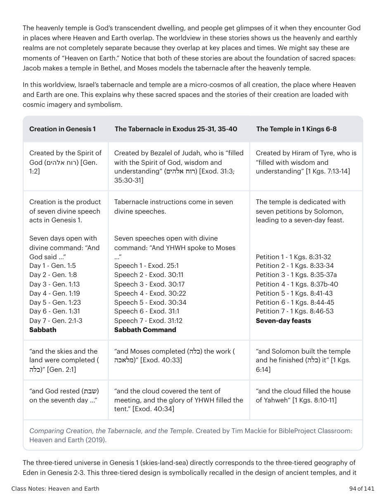
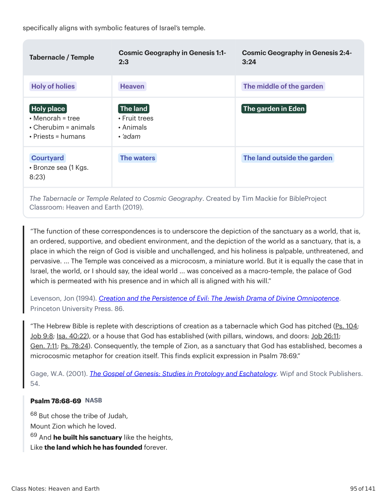
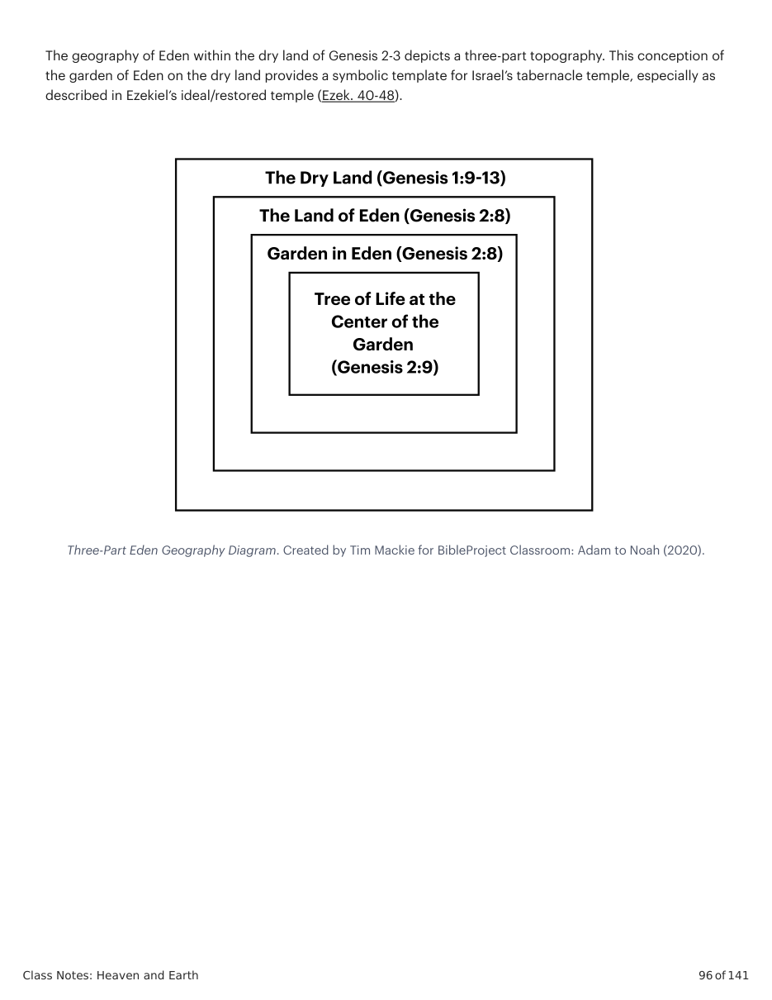
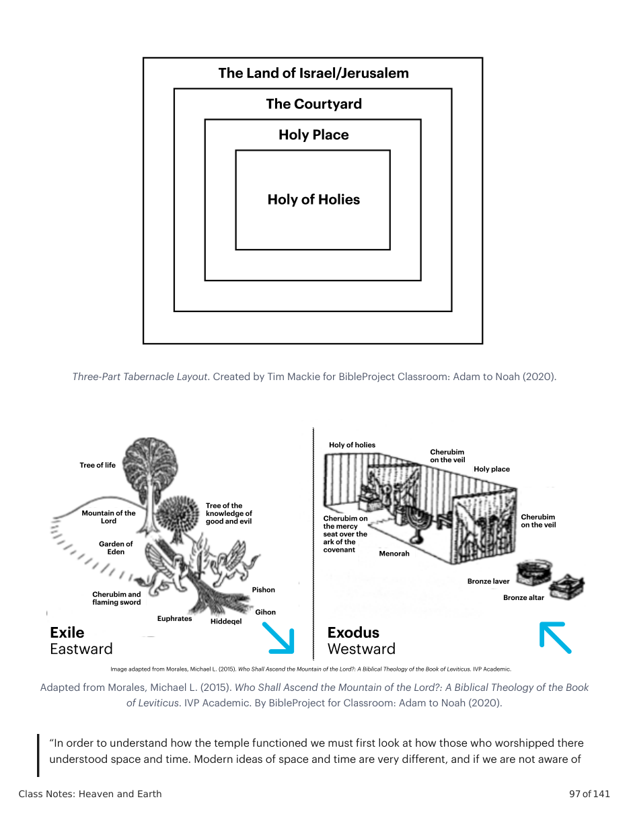
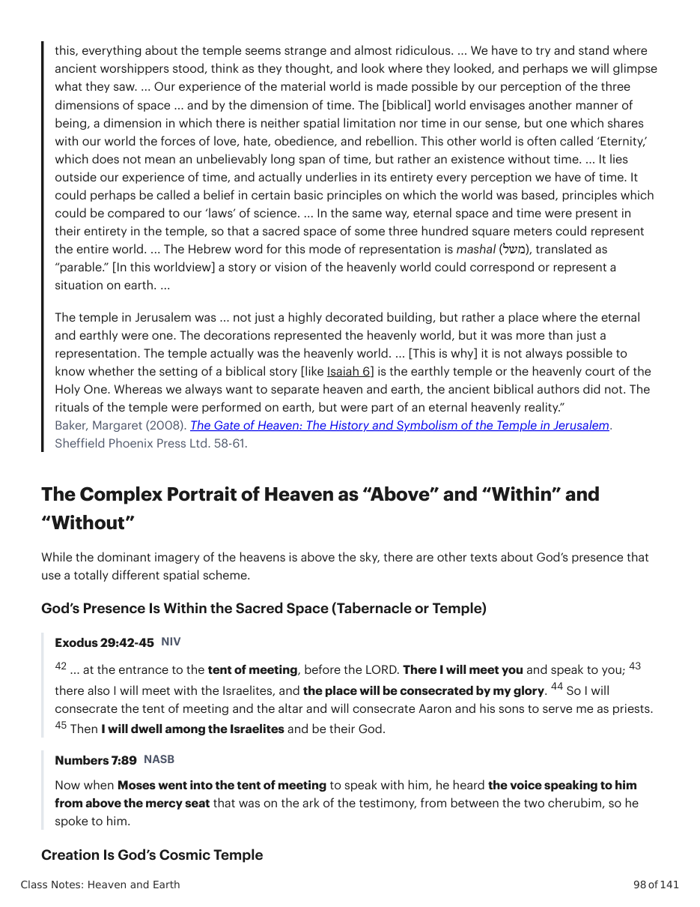
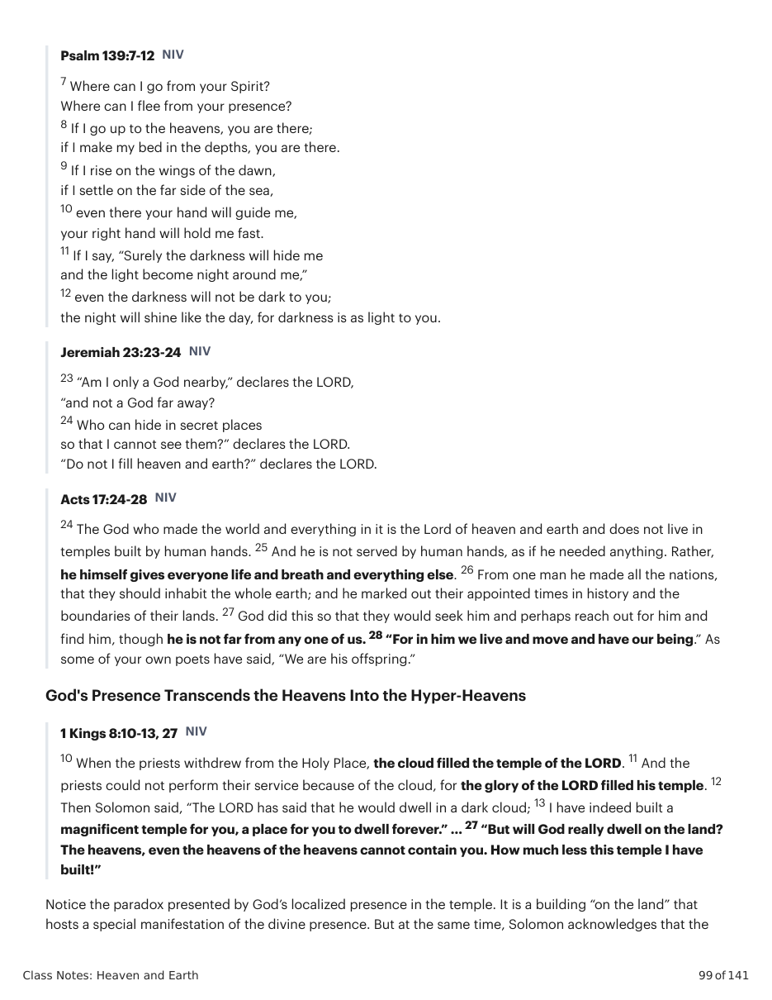
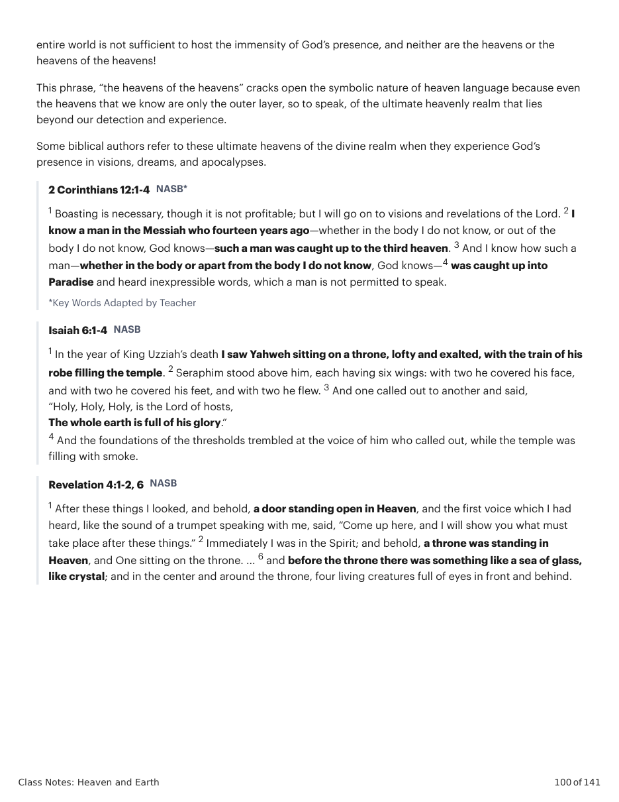
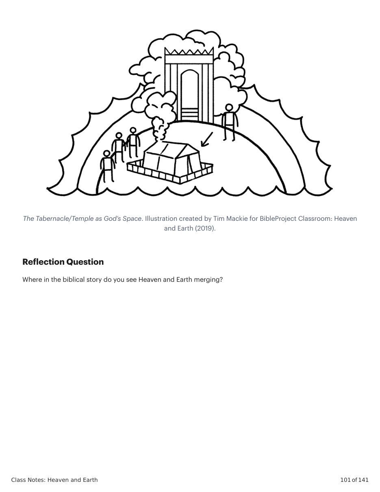

Heaven and Earth (2019).
The three-tiered universe in Genesis 1 (skies-land-sea) directly corresponds to the three-tiered geography of Eden in Genesis 2-3. This three-tiered design is symbolically recalled in the design of ancient temples, and it specifically aligns with symbolic features of Israel’s temple. Tabernacle / Temple Cosmic Geography in Genesis 1:1- 2:3 Cosmic Geography in Genesis 2:4- 3:24 Holy of holies Heaven The middle of the garden Holy place • Menorah = tree • Cherubim = animals • Priests = humans The land • Fruit trees • Animals • ‘adam The garden in Eden Courtyard • Bronze sea (1 Kgs. 8:23) The waters The land outside the garden The Tabernacle or Temple Related to Cosmic Geography. Created by Tim Mackie for BibleProject
Classroom: Heaven and Earth (2019).
“The function of these correspondences is to underscore the depiction of the sanctuary as a world, that is, an ordered, supportive, and obedient environment, and the depiction of the world as a sanctuary, that is, a place in which the reign of God is visible and unchallenged, and his holiness is palpable, unthreatened, and pervasive. ... The Temple was conceived as a microcosm, a miniature world. But it is equally the case that in Israel, the world, or I should say, the ideal world ... was conceived as a macro-temple, the palace of God which is permeated with his presence and in which all is aligned with his will.”
Levenson, Jon (1994). Creation and the Persistence of Evil: The Jewish Drama of Divine Omnipotence.
Princeton University Press. 86. “The Hebrew Bible is replete with descriptions of creation as a tabernacle which God has pitched (Ps. 104; Job 9:8; Isa. 40:22), or a house that God has established (with pillars, windows, and doors: Job 26:11; Gen. 7:11; Ps. 78:24). Consequently, the temple of Zion, as a sanctuary that God has established, becomes a microcosmic metaphor for creation itself. This finds explicit expression in Psalm 78:69.”
Gage, W.A. (2001). The Gospel of Genesis: Studies in Protology and Eschatology. Wipf and Stock Publishers.
54. Psalm 78:68-69 NASB 68 But chose the tribe of Judah, Mount Zion which he loved. 69 And he built his sanctuary like the heights, Like the land which he has founded forever. The geography of Eden within the dry land of Genesis 2-3 depicts a three-part topography. This conception of the garden of Eden on the dry land provides a symbolic template for Israel’s tabernacle temple, especially as described in Ezekiel’s ideal/restored temple (Ezek. 40-48).
Three-Part Eden Geography Diagram. Created by Tim Mackie for BibleProject Classroom: Adam to Noah (2020).
Three-Part Tabernacle Layout. Created by Tim Mackie for BibleProject Classroom: Adam to Noah (2020).
Adapted from Morales, Michael L. (2015). Who Shall Ascend the Mountain of the Lord?: A Biblical Theology of the Book
of Leviticus. IVP Academic. By BibleProject for Classroom: Adam to Noah (2020).
“In order to understand how the temple functioned we must first look at how those who worshipped there understood space and time. Modern ideas of space and time are very different, and if we are not aware of this, everything about the temple seems strange and almost ridiculous. ... We have to try and stand where ancient worshippers stood, think as they thought, and look where they looked, and perhaps we will glimpse what they saw. ... Our experience of the material world is made possible by our perception of the three dimensions of space ... and by the dimension of time. The [biblical] world envisages another manner of being, a dimension in which there is neither spatial limitation nor time in our sense, but one which shares with our world the forces of love, hate, obedience, and rebellion. This other world is often called ‘Eternity,’ which does not mean an unbelievably long span of time, but rather an existence without time. ... It lies outside our experience of time, and actually underlies in its entirety every perception we have of time. It could perhaps be called a belief in certain basic principles on which the world was based, principles which could be compared to our ‘laws’ of science. ... In the same way, eternal space and time were present in their entirety in the temple, so that a sacred space of some three hundred square meters could represent the entire world. ... The Hebrew word for this mode of representation is mashal (משל), translated as “parable.” [In this worldview] a story or vision of the heavenly world could correspond or represent a situation on earth. ... The temple in Jerusalem was ... not just a highly decorated building, but rather a place where the eternal and earthly were one. The decorations represented the heavenly world, but it was more than just a representation. The temple actually was the heavenly world. ... [This is why] it is not always possible to know whether the setting of a biblical story [like Isaiah 6] is the earthly temple or the heavenly court of the Holy One. Whereas we always want to separate heaven and earth, the ancient biblical authors did not. The rituals of the temple were performed on earth, but were part of an eternal heavenly reality.”
Baker, Margaret (2008). The Gate of Heaven: The History and Symbolism of the Temple in Jerusalem.
Sheffield Phoenix Press Ltd. 58-61. The Complex Portrait of Heaven as “Above” and “Within” and “Without” While the dominant imagery of the heavens is above the sky, there are other texts about God’s presence that use a totally different spatial scheme. God’s Presence Is Within the Sacred Space (Tabernacle or Temple) Exodus 29:42-45 NIV 42 ... at the entrance to the tent of meeting, before the LORD. There I will meet you and speak to you; 43 there also I will meet with the Israelites, and the place will be consecrated by my glory. 44 So I will consecrate the tent of meeting and the altar and will consecrate Aaron and his sons to serve me as priests. 45 Then I will dwell among the Israelites and be their God. Numbers 7:89 NASB Now when Moses went into the tent of meeting to speak with him, he heard the voice speaking to him from above the mercy seat that was on the ark of the testimony, from between the two cherubim, so he spoke to him. Creation Is God’s Cosmic Temple Psalm 139:7-12 NIV 7 Where can I go from your Spirit? Where can I flee from your presence? 8 If I go up to the heavens, you are there; if I make my bed in the depths, you are there. 9 If I rise on the wings of the dawn, if I settle on the far side of the sea, 10 even there your hand will guide me, your right hand will hold me fast. 11 If I say, “Surely the darkness will hide me and the light become night around me,” 12 even the darkness will not be dark to you; the night will shine like the day, for darkness is as light to you. Jeremiah 23:23-24 NIV 23 “Am I only a God nearby,” declares the LORD, “and not a God far away? 24 Who can hide in secret places so that I cannot see them?” declares the LORD. “Do not I fill heaven and earth?” declares the LORD. Acts 17:24-28 NIV 24 The God who made the world and everything in it is the Lord of heaven and earth and does not live in temples built by human hands. 25 And he is not served by human hands, as if he needed anything. Rather, he himself gives everyone life and breath and everything else. 26 From one man he made all the nations, that they should inhabit the whole earth; and he marked out their appointed times in history and the boundaries of their lands. 27 God did this so that they would seek him and perhaps reach out for him and find him, though he is not far from any one of us. 28 “For in him we live and move and have our being.” As some of your own poets have said, “We are his offspring.” God's Presence Transcends the Heavens Into the Hyper-Heavens 1 Kings 8:10-13, 27 NIV 10 When the priests withdrew from the Holy Place, the cloud filled the temple of the LORD. 11 And the priests could not perform their service because of the cloud, for the glory of the LORD filled his temple. 12 Then Solomon said, “The LORD has said that he would dwell in a dark cloud; 13 I have indeed built a magnificent temple for you, a place for you to dwell forever.” ... 27 “But will God really dwell on the land? The heavens, even the heavens of the heavens cannot contain you. How much less this temple I have built!” Notice the paradox presented by God’s localized presence in the temple. It is a building “on the land” that hosts a special manifestation of the divine presence. But at the same time, Solomon acknowledges that the entire world is not sufficient to host the immensity of God’s presence, and neither are the heavens or the heavens of the heavens! This phrase, “the heavens of the heavens” cracks open the symbolic nature of heaven language because even the heavens that we know are only the outer layer, so to speak, of the ultimate heavenly realm that lies beyond our detection and experience. Some biblical authors refer to these ultimate heavens of the divine realm when they experience God’s presence in visions, dreams, and apocalypses. 2 Corinthians 12:1-4 NASB* 1 Boasting is necessary, though it is not profitable; but I will go on to visions and revelations of the Lord. 2 I know a man in the Messiah who fourteen years ago—whether in the body I do not know, or out of the body I do not know, God knows—such a man was caught up to the third heaven. 3 And I know how such a man—whether in the body or apart from the body I do not know, God knows—4 was caught up into Paradise and heard inexpressible words, which a man is not permitted to speak. *Key Words Adapted by Teacher Isaiah 6:1-4 NASB 1 In the year of King Uzziah’s death I saw Yahweh sitting on a throne, lofty and exalted, with the train of his robe filling the temple. 2 Seraphim stood above him, each having six wings: with two he covered his face, and with two he covered his feet, and with two he flew. 3 And one called out to another and said, “Holy, Holy, Holy, is the Lord of hosts, The whole earth is full of his glory.” 4 And the foundations of the thresholds trembled at the voice of him who called out, while the temple was filling with smoke. Revelation 4:1-2, 6 NASB 1 After these things I looked, and behold, a door standing open in Heaven, and the first voice which I had heard, like the sound of a trumpet speaking with me, said, “Come up here, and I will show you what must take place after these things.” 2 Immediately I was in the Spirit; and behold, a throne was standing in Heaven, and One sitting on the throne. ... 6 and before the throne there was something like a sea of glass, like crystal; and in the center and around the throne, four living creatures full of eyes in front and behind. The Tabernacle/Temple as God’s Space. Illustration created by Tim Mackie for BibleProject Classroom: Heaven
and Earth (2019).
Como o templo servia como o ponto de encontro entre céus e terra, e como Jesus cumpre isso?









